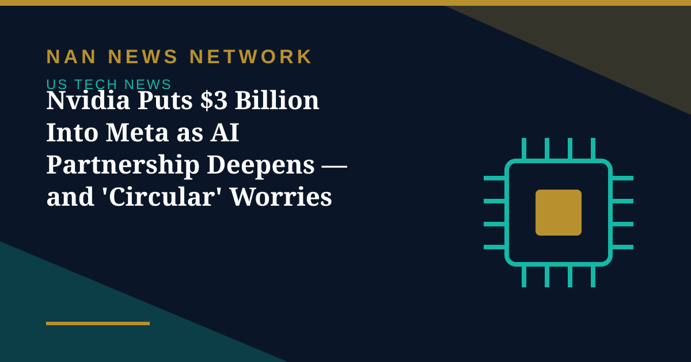

Nvidia Puts $3 Billion Into Meta as AI Partnership Deepens — and 'Circular' Worries Grow

Nvidia will invest $3 billion in Meta Platforms' equity offering, the companies announced on October 27, deepening a partnership that ties the world's leading AI chipmaker ever closer to one of its largest customers.
What the expanded deal covers
Under the expanded collaboration, Meta will deploy more Nvidia infrastructure, including next-generation Vera Rubin systems and Vera CPUs, alongside Spectrum-X networking and BlueField-4 technology, to train and run its Muse family of AI models. The companies said they will work together on improving training and inference performance, and are exploring Nvidia's OpenShell architecture and Sentry tools for safer deployment of AI agents. Meta chief executive Mark Zuckerberg said the goal is delivering personal AI assistance to billions of people.
A record fundraising, with suppliers among the buyers
The investment forms part of Meta's expanded fundraising to pay for AI infrastructure, with reports putting the total offering at about $97.5 billion after an upsizing. Nvidia is not the only supplier buying in: AMD said it would invest $1 billion, and its Helios rack-scale systems are now running at Meta. Meta has projected capital spending of up to $145 billion this year and has warned it will need to raise hundreds of billions more over several years.
The circular-financing debate
Critics argue the arrangement is circular: a supplier invests in a customer, which then spends the money on the supplier's products, making it harder to tell how much AI demand comes from customers spending their own money. Supporters counter that Nvidia's processors remain the dominant hardware in AI data centers, supply remains tight relative to demand, and the investment is small next to the company's scale. Chip stocks rose on the news on October 28, but the debate over who ultimately pays for the AI buildout is only getting louder.
Sources: Reuters, GlobeNewswire, NewsGhana, October 27-29, 2026
More on US Tech News
- Microsoft Rises, Alphabet Falls: Free Cash Flow Becomes the AI Earnings Scorecard
- SK Hynix Profit Jumps More Than Sevenfold as AI Rally Faces Earnings Test
- Judge Orders OpenAI to Disclose Apple Hiring Records in Talent Dispute
- Apple Unveils M6 MacBook Pro and iMac With Faster On-Device AI
- OpenAI Launches GPT-6.1 Terra With Lower API Prices
- Musk Says SpaceX Closed $40 Billion in GPU Debt and Warns of a Neocloud Shakeout
- AI Inference Prices Have Fallen as Much as 80 Percent Since June, Analysis Finds
- White House Names Jay Clayton as AI Czar to Lead 'Super Intelligence Force'
- SpaceX Q3 2026: $14.6 Billion Revenue as Starship Flight 15 Targets a Dual-Stage Catch
- US Orders DeepSeek Stripped From Federal Civilian Systems